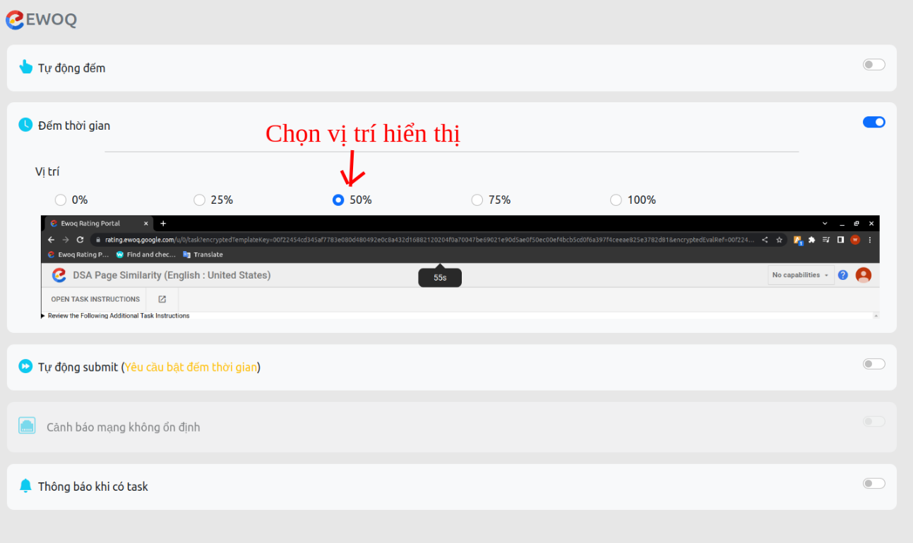
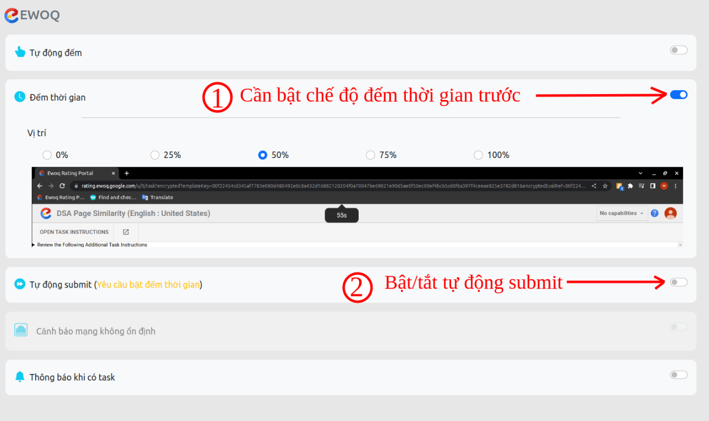
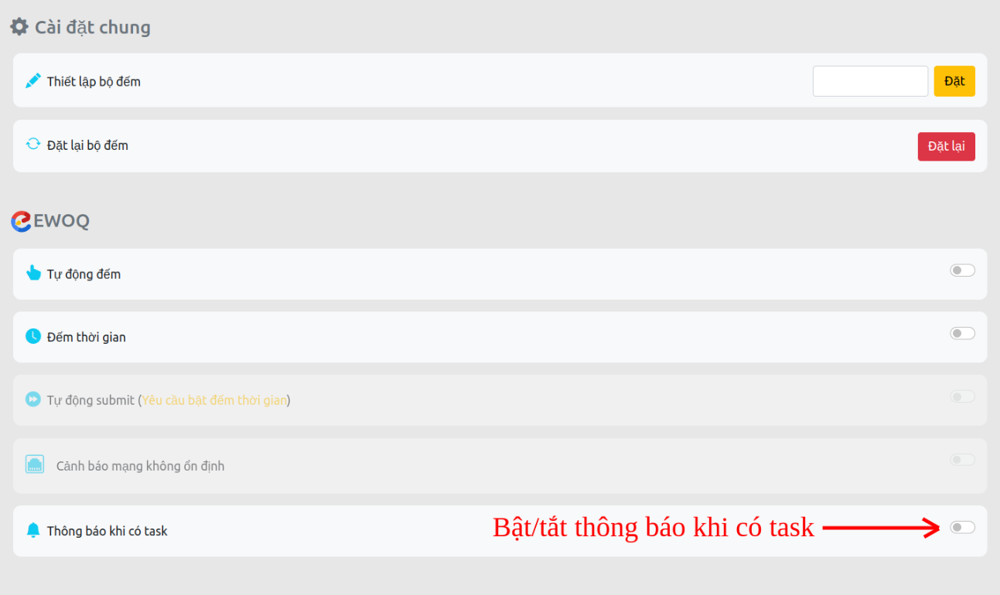
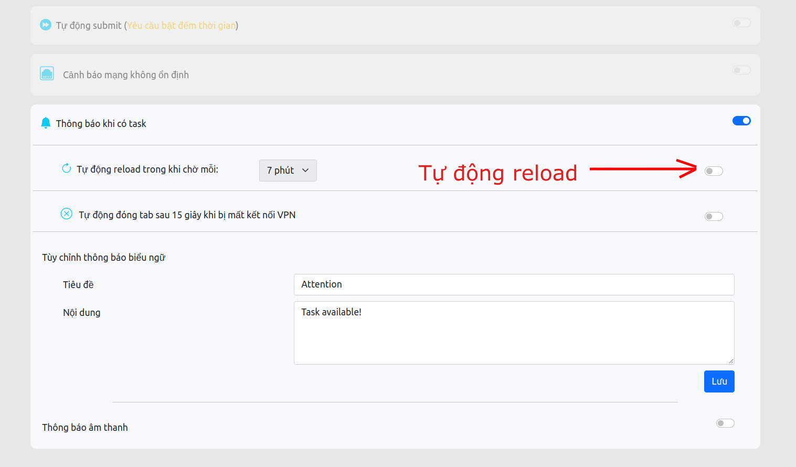

Có gì ở v2.1?
(Click để xem chi tiết)
- (Mới) Tự động tải lại trang sau một khoảng thời gian khi "canh" task.
- (Mới) Kiểm tra và tự động đóng tab nếu mất kết nối VPN trong khi ở chế độ "canh" task.
- (Mới) Cập nhật và hướng dẫn bật cho phép phát âm thanh cảnh báo mà không cần tương tác với trang web trước mỗi khi tải/tải lại trang.
-
Sửa lỗi đếm task ngay cả khi click vào nút submit đang bị vô hiệu hóa.
-
Sửa lỗi trong chế độ tự động submit.
-
Và sửa một vài lỗi khác.
Hướng dẫn sử dụng chung
 EWOQ
EWOQ
(Click để xem chi tiết)
- 1. Chế độ tự động đếm
- 2. Tính năng đếm thời gian
- 3. Tính năng tự động submit
-
4. Tính năng thông báo khi có task
-
4.1. Tự động reload
-
4.2. Tự đóng tab khi mất kết nối VPN
-
4.3. Tùy chỉnh thông báo biếu ngữ
-
4.4. Sử dụng thông báo âm thanh
-
4.5. Thêm âm thanh thông báo tùy chọn
-
4.6. Hướng dẫn bật cho phép EWOQ tự động phát âm thanh mà không cần người dùng tương tác với trang trước.
-
Chi tiết:
-
1. Chế độ tự động đếm

-
2. Chế độ đếm thời gian

- Tùy chỉnh vị trí bộ đếm thời gian:
 -
3. Chế độ tự động submit (Cần bật chế độ đếm thời gian)

- Tùy chỉnh thời gian tự động submit:

-
4. Thông báo khi có task

4.1. Tự động reload trang trong khi chờ:
4.2. Tự động đóng tab khi mất kết nối VPN trong khi chờ:
4.3. Tùy chỉnh tiêu đề, nội dung thông báo:
4.4. Sử dụng thông báo âm thanh:
4.4.1. Sử dụng chuông có sẵn:
4.4.2. Sử dụng chuông tùy chọn:
4.5. Cách thêm chuông tùy chọn:Chú ý: Do vẫn đề về bảo mật và quyền riêng tư của google, cách thêm âm thanh tùy chọn chỉ có thể sử dụng được khi bạn sử dụng cách cài bằng Chế độ dành cho nhà phát triển (Developer mode) thông qua thư mục nguồn của extension.
4.5.1. Bước 1: Chuẩn bị
- File âm thanh
Lưu ý: đặt tên file âm thanh viết liền không dấu, không có kí tự đặc biệt (Chỉ hỗ trợ các định dạng âm thanh: mp3)
Ví dụ: nhac-chuong.mp34.5.2. Bước 2: Copy file âm thanh đã chuẩn bị vào thư mục customs trong thư mục extension đã tải về và giải nén theo đường dẫn:
<Thư mục extension đã tải về và giải nén>/sources/res/sounds/customs/4.5.3. Bước 3: Reload lại extension
Vào lại trang quản lý extensions của chrom và ấn reload lại.
More tools->Extensions hoặc Công cụ khác-> Tiện ích mở rộng
4.5.4. Bước 4: Thêm tên file trong trang Cài đặt
- Điền tên file vừa copy vào thư mục customs và nhấn thêm
4.5.5. XONG , giờ file đã được cập nhật trong danh sách ở trên
hãy chọn để dùng nó! 4.6. Hướng dẫn bật cho phép EWOQ tự động phát âm thanh mà không cần người dùng tương tác với trang web trước:
4.6. Hướng dẫn bật cho phép EWOQ tự động phát âm thanh mà không cần người dùng tương tác với trang web trước:4.6.1. Bước 1: Truy cập vào trang cài đặt quyền.
Dán đường dẫn sau vào thanh địa chỉ của trình duyệt và enter sẽ tới trang cài đặt quyền như hình:
chrome://settings/content/siteDetails?site=https%3A%2F%2Frating.ewoq.google.com%2F4.6.2. Bước 2: Cho phép trang EWOQ phát âm thanh.
- Cuộn xuống tới mục Sound trong danh sách quyền:
- Chọn cho phép ("Allow")4.6.3. Bước 3: Tải lại trang
Nếu bạn đang mở trang EWOQ thì hãy nhấn tải lại trang để áp dụng quyền.
4.6.4. Bước 4: Xong
Sau khi đã cho phép EWOQ tự động phát âm thanh, bạn sẽ không thấy thông báo yêu cầu tương tác với trang mỗi khi tải/tải lại nữa:))